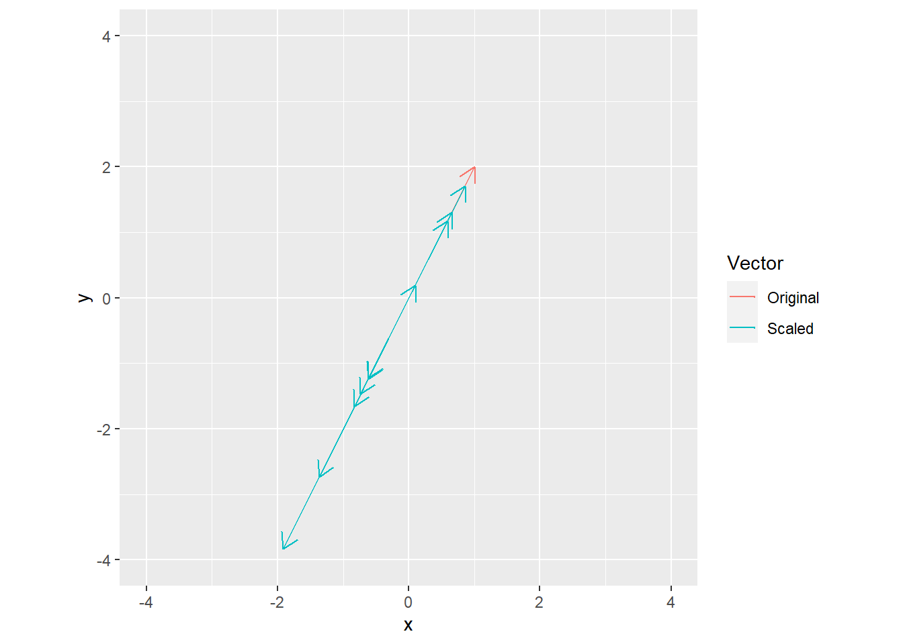

Solutions for code challenges
Chapter 2
library(ggplot2)
v <- c(1, 2)
s <- rnorm(10)
all_vectors <- data.frame(xend = c(v[1], v[1] * s),
yend = c(v[2], v[2] * s),
Vector = c("Original", rep("Scaled", length(s))),
x = 0,
y = 0)
ggplot(data=all_vectors, aes(x=x, y=y, xend=xend, yend=yend, color=Vector)) +
geom_segment(arrow= arrow(length = unit(0.03, "npc"))) +
xlim(-4, 4) +
ylim(-4, 4) +
coord_equal()
Chapter 3
Exercise 1
Chapter 5
Exercise 1
Chapter 6
Exercise 1
A <- matrix(runif(n=2*4), nrow=2, ncol=4)
B <- matrix(runif(n=4*3), nrow=4, ncol=3)
C1 <- matrix(0, nrow=2, ncol=3)
for(i in 1:4){
C1 <- C1 + outer(A[, i], B[i, ])
}
C1 - A %*% B## [,1] [,2] [,3]
## [1,] 0 0 0
## [2,] 0 0 0Exercise 2
## [1] 0.4407820 0.4891542 1.0255423 0.1605507## [1] 0.4407820 0.4891542 1.0255423 0.1605507Exercise 3
## [,1] [,2] [,3]
## [1,] 0 0 0
## [2,] 0 0 0
## [3,] 0 0 0Exercise 4
Note that norm() requires a matrix as an input, therefore, we convert an atomic vector to a matrix for the norm computation.
m <- 5
A <- matrix(runif(n=m*m), nrow=m, ncol=m)
v <- runif(n=m)
LHS <- norm(A %*% v, type = "F")
RHS <- norm(A, type = "F") * norm(matrix(v), type="F")
RHS - LHS # should always be positive## [1] 0.3911112Chapter 7
Exercise 1
Chapter 8
Exercise 1
A <- matrix(runif(n=4*3), nrow=4, ncol=3) %*% matrix(runif(n=3*4), nrow=3, ncol=4)
B <- matrix(runif(n=4*3), nrow=4, ncol=3) %*% matrix(runif(n=3*4), nrow=3, ncol=4)
n <- pracma::nullspace(A)
print(B %*% A %*% n) # zeros vector## [,1]
## [1,] 5.551115e-17
## [2,] -5.551115e-17
## [3,] -1.665335e-16
## [4,] 1.110223e-16## [,1]
## [1,] 0.22722870
## [2,] 0.21246335
## [3,] 0.05179135
## [4,] 0.03917362Chapter 9
Exercise 1
Base R does not implement Hermitian transpose directly and you are advised to compute it via Conj(t(A)), see Notes for [t()](https://stat.ethz.ch/R-manual/R-devel/library/base/html/t.html function.
## [,1] [,2]
## [1,] 1+0i 0+0i
## [2,] 0+0i 1+0i## [,1] [,2]
## [1,] 0+0i 1+0i
## [2,] 1+0i 0+0iExercise 2
In contrast to Matlab, a complex matrix isSymmetric() only if it is Hermitian.
r <- matrix(runif(n=3*3), nrow=3, ncol=3)
im <- matrix(runif(n=3*3), nrow=3, ncol=3)
A <- r + im * 1i
A1 <- A + Conj(t(A))
A2 <- A %*% Conj(t(A))
isSymmetric(A1)## [1] TRUE## [1] TRUEChapter 10
Exercise 1
Chapter 11
Exercise 1
A <- matrix(sample(0:10, size=4*4, replace=TRUE), nrow=4, ncol=4)
b <- sample(-10:-1, size=1)
print(det(b * A))## [1] 159375## [1] 159375Exercise 2
library(ggplot2)
ns <- 3:30
iters <- 100
dets <- matrix(0, nrow=length(ns), ncol = iters)
for(ni in 1:length(ns)){
for(it in 1:iters){
A <- matrix(rnorm(n=ns[ni]^2), nrow=ns[ni], ncol=ns[ni]) # step 1
A[, 1] <- A[, 2] # step 2
dets[ni, it] <- abs(det(A)) # step 3
}
}
dets_summary <-
data.frame(MatrixSize = ns,
LogDeterminant = log(apply(dets, MARGIN = 1, mean)))
ggplot(data=dets_summary, aes(x=MatrixSize, y=LogDeterminant)) +
geom_line() +
geom_point() +
xlab("Matrix size") +
ylab("Log determinant")Chapter 12
Exercise 1
# create matrix
m <- 4
A <- matrix(rnorm(m^2), nrow=m, ncol=m)
M <- matrix(0, nrow=m, ncol=m)
G <- matrix(0, nrow=m, ncol=m)
# compute minors matrix
for(i in 1:m){
for(j in 1:m){
## select rows and cols
# implementation matching the original
rows <- rep(TRUE, m)
rows[i] <- FALSE
cols <- rep(TRUE, m)
cols[j] <- FALSE
M[i, j] <- det(A[rows, cols])
# a simpler R-version using negative (excluding) indexing
M[i, j] <- det(A[-i, -j])
# compute G
G[i, j] <- (-1)^(i + j)
}
}
# compute C
C <- M * G
# compute A
Ainv <- t(C) / det(A)
AinvI <- solve(A)
round(AinvI - Ainv, 4)## [,1] [,2] [,3] [,4]
## [1,] 0 0 0 0
## [2,] 0 0 0 0
## [3,] 0 0 0 0
## [4,] 0 0 0 0Exercise 2
I renamed T into TM, as T is a logical TRUE in R.
# square matrix
A <- matrix(rnorm(5^2), nrow=5, ncol=5)
Ai <- solve(A)
Api <- pracma::pinv(A)
print(round(Ai - Api))## [,1] [,2] [,3] [,4] [,5]
## [1,] 0 0 0 0 0
## [2,] 0 0 0 0 0
## [3,] 0 0 0 0 0
## [4,] 0 0 0 0 0
## [5,] 0 0 0 0 0# tall matrix
TM <- matrix(rnorm(5*3), nrow=5, ncol=3)
TMl <- solve(t(TM) %*% TM) %*% t(TM)
TMpi <- pracma::pinv(TM)
print(round(TMl - TMpi))## [,1] [,2] [,3] [,4] [,5]
## [1,] 0 0 0 0 0
## [2,] 0 0 0 0 0
## [3,] 0 0 0 0 0Chapter 13
Exercise 2
m <- 4
n <- 4
A <- matrix(rnorm(n=m*n), nrow=m, ncol=n)
Q <- matrix(0, nrow=m, ncol=n)
for(i in 1:n){
Q[, i] <- A[, i]
# orthogonalize
a <- A[, i] # convenience
if (i > 1){
for(j in 1:(i-1)){
q <- Q[, j] # convenience
Q[, i] <- Q[, i] - pracma::dot(a, q) / pracma::dot(q, q) * q
}
}
# normalize
Q[, i] <- Q[, i] / norm(matrix(Q[, i]), type="F")
}
QR <- qr(A)
Q2 <- qr.Q(QR)Chapter 14
Exercise 3
# load the data into a table that we convert to a matrix
df <- read.csv("http://sincxpress.com/widget_data.txt", header=FALSE)
data <- as.matrix(df)
# design matrix
X <- cbind(rep(1, nrow(data)), data[, 1:2])
colnames(X) <- c("x1", "x2", "x3")
# outcome variable
y <- data[, 3]
# beta coefficients[]
beta <- lsfit(X, y)$coefficients[1:3]## Warning in lsfit(X, y): 'X' matrix was collinearExercise 4
library(dplyr)
library(ggplot2)
library(tidyr)
df_long <-
df %>%
dplyr::rename("Time of day" = 1, "Age" = 2, "Widgets purchased"=3) %>%
tidyr::pivot_longer(cols = c("Time of day", "Age"), names_to = "Variable name", values_to = "Variable") %>%
dplyr::mutate(`Variable name` = factor(`Variable name`, levels=c("Time of day", "Age")))
ggplot(df_long, aes(x = Variable, y=`Widgets purchased`)) +
geom_point() +
facet_grid(.~`Variable name`, scales="free_x")Chapter 15
Exercise 1
avediffs <- rep(0, times=100)
for(n in 1:100){
A <- matrix(rnorm(n=n^2), nrow=n, ncol=n)
B <- matrix(rnorm(n=n^2), nrow=n, ncol=n)
l1 <- geigen::geigen(A, B, symmetric=FALSE, only.values=TRUE)$values
l2 <- eigen(solve(B) %*% A)$values
# important to sort eigvals
l1 <- sort(l1)
l2 <- sort(l2)
avediffs[n] <- mean(abs(l1-l2))
}
ggplot(data=NULL, aes(x=1:100, y=avediffs)) +
geom_point() +
xlab("Matrix size") +
ylab(expression(paste(Delta, lambda)))Exercise 3
library(dplyr)
library(ggplot2)
library(patchwork)
library(reshape2)
v <- 1:50
lstrow <- c(v[length(v)], v[-length(v)])
H <- pracma::hankel(v, lstrow)
eigH <- eigen(H)
V <- eigH$vectors[, order(eigH$values, decreasing=TRUE)]
# the matrix
plotH <-
ggplot(data=reshape2::melt(H), aes(x=1-Var1, y=Var2)) +
geom_raster(aes(fill=value), show.legend=FALSE) +
labs(title="Hankel matrix") +
coord_equal() + xlab("") + ylab("")
# eigenvector matrix
plotV <-
ggplot(data=reshape2::melt(V), aes(x=Var2, y=Var1)) +
geom_raster(aes(fill=value), show.legend=FALSE) +
labs(title="Eigenvector matrix") +
coord_equal() + xlab("") + ylab("")
# a few eigenvectors
dfV <-
data.frame(t(V)) %>%
dplyr::slice_head(n=4) %>%
dplyr::mutate(VectorIndex = 1:n()) %>%
tidyr::pivot_longer(cols = c(X1:X50), names_to="Element", values_to="Value") %>%
dplyr::group_by(VectorIndex) %>%
dplyr::mutate(ElementIndex = 1:n()) %>%
dplyr::select(-Element)
plot4 <-
ggplot(data=dfV, aes(x = ElementIndex, y=Value, color=as.factor(VectorIndex))) +
geom_line(show.legend=FALSE) +
geom_point(show.legend=FALSE) +
xlab("Eigenvector element index") +
ylab("Eigenvector element value") +
labs(title = "First four eigenvectors")
(plotH | plotV) / plot4Chapter 16
Exercise 1
In R svd() defaults to “economy” mode. If you want the full matrix, you must specify dimensions for U and V explicitly.
m <- 6
n <- 3
A <- matrix(rnorm(n=m*n), nrow=m, ncol=n)
fullSVD <- svd(A, nu=m, nv=n)
economySVD <- svd(A)
cat(sprintf("Full SVD: (%d, %d), %d, (%d, %d)\n", nrow(fullSVD$u), ncol(fullSVD$u), length(fullSVD$d), nrow(fullSVD$v), ncol(fullSVD$v)))## Full SVD: (6, 6), 3, (3, 3)cat(sprintf("Economy : (%d, %d), %d, (%d, %d)\n", nrow(economySVD$u), ncol(economySVD$u), length(economySVD$d), nrow(economySVD$v), ncol(economySVD$v)))## Economy : (6, 3), 3, (3, 3)Exercise 2
Note that eigen() sorts eigenvalues and eigenvectors, so sorting is redundant and can be skipped (but I kept it to match the original code).
A <- matrix(rnorm(n=4*5), nrow=4, ncol=5) # matrix
A <- matrix(a, nrow=4, ncol=5, byrow=TRUE)
eigAV <- eigen(t(A) %*% A)
V <- eigAV$vectors[, order(eigAV$values, decreasing=TRUE)] # sort descent V
eigAU <- eigen(A %*% t(A))
U <- eigAU$vectors[, order(eigAU$values, decreasing=TRUE)] # sort descent U
# create Sigma
sorted_values <- sort(eigAU$values, decreasing=TRUE)
S <- matrix(0, nrow=nrow(A), ncol=ncol(A))
for(i in 1:length(sorted_values)){
S[i, i] <- sqrt(sorted_values[i])
}
svdA <- svd(A) # svdExercise 3
library(ggplot2)
library(patchwork)
library(RColorBrewer)
library(reshape2)
A <- matrix(rnorm(n=5*3), nrow=5, ncol=3)
svdA <- svd(A)
S <- diag(svdA$d) # need Sigma matrix
fill_palette <- colorRampPalette(rev(brewer.pal(11, "Spectral")))
sc <- scale_colour_gradientn(colours = fill_palette(100), limits=c(min(A), max(A)))
one_layer_plots <- list()
lowrank_plots <- list()
for(i in 1:3) {
onelayer <- outer(svdA$u[, i], svdA$v[i, ]) * svdA$d[i]
one_layer_plots[[i]] <-
ggplot(data=reshape2::melt(t(onelayer)), aes(x=Var1, y=Var2, fill=value)) +
geom_tile(show.legend=FALSE) + theme_void() +
labs(title=sprintf("Layer %d", i)) +
coord_equal() + sc
lowrank <- matrix(svdA$u[, 1:i], ncol=i) %*% S[1:i,1:i] %*% t(svdA$v)[1:i,]
lowrank_plots[[i]] <-
ggplot(data=reshape2::melt(t(lowrank)), aes(x=Var1, y=Var2, fill=value)) +
geom_tile(show.legend=FALSE) + theme_void() +
labs(title=sprintf("Layers 1:%d", i)) +
coord_equal() + sc
}
plotA <-
ggplot(data=reshape2::melt(t(A)), aes(x=Var1, y=Var2, fill=value)) +
geom_tile(show.legend=FALSE) + theme_void() +
labs(title="Orig. A") +
coord_equal() + sc
layout <- "
ABC#
DEFG
"
one_layer_plots[[1]] + one_layer_plots[[2]] + one_layer_plots[[3]] +
lowrank_plots[[1]] + lowrank_plots[[2]] + lowrank_plots[[3]] + plotA +
plot_layout(design = layout)Exercise 4
m <- 6
n <- 16
condnum <- 42
# create U and V from random numbers
U <- qr(matrix(rnorm(m*m), nrow=m, ncol=m))
V <- qr(matrix(rnorm(n*n), nrow=n, ncol=n))
# create singular values vector
s <- seq(condnum, 1, length.out = min(c(m,n)))
S <- diag(s, nrow=m, ncol=n)
# ↓ original code ↓
# S <- matrix(0, nrow=m, ncol=n)
# for(i in 1:min(c(m, n))){
# S[i, i] <- s[i]
# }
A <- qr.Q(U) %*% S %*% t(qr.Q(V)) # construct matrix
pracma::cond(A)## [1] 42Exercise 5
library(imager)
rankN <- 20
picture <- imager::load.image('https://upload.wikimedia.org/wikipedia/en/8/86/Einstein_tongue.jpg')
pic <- as.matrix(picture)
picSVD <- svd(pic, nu=nrow(pic), nv=ncol(pic))
S <- diag(picSVD$d, nrow=nrow(pic), ncol=ncol(pic))
lowrank <- picSVD$u[, 1:rankN] %*% S[1:rankN, 1:rankN] %*% t(picSVD$v)[1:rankN,]
plot(imager::as.cimg(lowrank), axes=FALSE)
Exercise 6
library(imager)
# convert to percent explained
s <- 100 * picSVD$d / sum(picSVD$d)
ggplot(data=NULL, aes(x=1:100, y=s[1:100])) +
geom_line() +
geom_point() +
xlab("Component number") +
ylab("Pct variance explains")thresh <- 4 # threshold in percent
comps <- s > thresh # comps greater than X%
lowrank <- picSVD$u[, comps] %*% S[comps, comps] %*% t(picSVD$v)[comps,]
layout(t(c(1,2)))
plot(picture, axes=FALSE, main="Original")
plot(as.cimg(lowrank), axes=FALSE, main=sprintf("%s comps with > %g%%", sum(comps), thresh))Exercise 7
Note matrix(picSVD$u[, 1:si], ncol=si). Without matrix(, ncol=si), picSVD$u[, 1:si] becomes an atomic vector and matrix multiplication breaks down.
library(ggplot2)
RMS <- rep(0, length(s))
for(si in 1:length(s)){
lowrank <- matrix(picSVD$u[, 1:si], ncol=si) %*% S[1:si, 1:si] %*% t(picSVD$v)[1:si,]
diffimg <- lowrank - pic
RMS[si] <- sqrt(mean(diffimg^2))
}
ggplot(data=NULL, aes(x=1:length(RMS), y=RMS)) +
geom_line() +
xlab("Rank approximation") +
ylab("Error (a.u.)")Exercise 8
Reminder, you need to specify nu and nv to ensure full matrices U and V.
library(matrixcalc)
X <- matrix(sample(1:6, size = 4*2, replace = TRUE), nrow=4, ncol=2)
svdX <- svd(X, nu=nrow(X), nv=ncol(X)) # eq. 29
U <- svdX$u
S <- diag(svdX$d, nrow=nrow(X), ncol=ncol(X))
V <- svdX$v
longV1 <- solve(t(U%*%S%*%t(V))%*%U%*%S%*%t(V)) %*% t(U%*%S%*%t(V)) # eq. 30
longV2 <- solve(V%*%t(S)%*%t(U)%*%U%*%S%*%t(V)) %*% t(U%*%S%*%t(V)) # eq. 31
longV3 <- solve(V%*%t(S)%*%S%*%t(V)) %*% t(U%*%S%*%t(V)) # eq. 32
longV4 <- V %*% matrixcalc::matrix.power(t(S) %*% S, -1) %*% t(V)%*%V%*%t(S)%*%t(U) # eq. 33
MPpinv <- pracma::pinv(X) # eq. 34Exercise 9
## [,1] [,2] [,3] [,4] [,5]
## [1,] 8.673617e-18 6.938894e-18 6.938894e-18 6.938894e-18 6.938894e-18
## [,6] [,7] [,8] [,9] [,10]
## [1,] 6.938894e-18 6.938894e-18 6.938894e-18 6.938894e-18 6.938894e-18
## [,11] [,12] [,13]
## [1,] 6.938894e-18 6.938894e-18 6.938894e-18Exercise 10
M <- 10
cns <- seq(10, 1e10, length.out=30)
avediffs <- rep(0, length(cns))
# loop over condition numbers
for(condi in 1:length(cns)){
# create A
U <- qr.Q(qr(matrix(rnorm(M^2), nrow=M, ncol=M)))
V <- qr.Q(qr(matrix(rnorm(M^2), nrow=M, ncol=M)))
S <- diag(cns[condi], nrow=M, ncol=M)
A <- U %*% S %*% t(V) # construct matrix
# create B
U <- qr.Q(qr(matrix(rnorm(M^2), nrow=M, ncol=M)))
V <- qr.Q(qr(matrix(rnorm(M^2), nrow=M, ncol=M)))
S <- diag(cns[condi], nrow=M, ncol=M)
B <- U %*% S %*% t(V) # construct matrix
# GEDs and sort
l1 <- sort(eigen(A)$values)
l2 <- sort(eigen(B)$values)
avediffs[condi] <- mean(abs(l1-l2))
}
ggplot(data=NULL, aes(x=cns, y=avediffs)) +
geom_line() +
xlab("Cond. number") +
ylab(expression(paste(Delta, lamda)))## Chapter 17 ### Exercise 1 {-}
library(plotly)
A <- matrix(c(-2, 3, 2, 8), nrow=2, ncol=2, byrow=TRUE)
vi <- seq(-2, 2, step=0.1)
quadform <- matrix(0, nrow=length(vi), ncol=length(vi))
for(i in 1:length(vi)){
for(j in 1:length(vi)){
v <- matrix(c(vi[i], vi[j]), ncol=1)
quadform[i, j] <- t(v) %*% A %*% v / (t(v) %*% v)
}
}
plot_ly(z = quadform, type = "surface")Exercise 2
n <- 4
nIterations <- 500
defcat <- rep(0, nIterations)
for(iteri in 1:nIterations){
# create matrix
A <- matrix(sample(-10:10, size=n^2, replace=TRUE), nrow=n, ncol=n)
e <- eigen(A)$values
while (is.complex(e)){
A <- matrix(sample(-10:10, size=n^2, replace=TRUE), nrow=n, ncol=n)
e <- eigen(A)$values
}
# "zero" threshold (from rank)
t <- n * pracma::eps(max(svd(A)$d))
# test definiteness
if (all(sign(e) == 1)) {
defcat[iteri] <- 1 # pos. def
}
else if (all(sign(e)>-1 & (sum(abs(e)<t)>0))){
defcat[iteri] <- 2 # pos. semidef
}
else if (all(sign(e)<1 & (sum(abs(e)<t)>0))){
defcat[iteri] <- 4 # neg. semidef
}
else if (all(sign(e) == -1)) {
defcat[iteri] <- 5 # neg. def
}
else {
defcat[iteri] <- 3 # indefinite
}
}
# print out summary
for(i in 1:5)
{
print(sprintf("cat %d: %d", i, sum(defcat == i)))
}## [1] "cat 1: 1"
## [1] "cat 2: 0"
## [1] "cat 3: 498"
## [1] "cat 4: 0"
## [1] "cat 5: 1"Chapter 18
Exercise 1
n <- 200
X <- matrix(rnorm(n*4), nrow=n, ncol=4) # data
X <- apply(X, MARGIN=2, FUN=scale, scale=FALSE) # mean-center
covM <- t(X) %*% X / (n-1) # covariance
stdM <- solve(diag(apply(X, MARGIN=2, FUN=sd))) # stdevs
corM <- stdM %*% t(X) %*% X %*% stdM / (n - 1) # R
# compare ours against R's
print(round(covM - cov(X), 3))## [,1] [,2] [,3] [,4]
## [1,] 0 0 0 0
## [2,] 0 0 0 0
## [3,] 0 0 0 0
## [4,] 0 0 0 0## [,1] [,2] [,3] [,4]
## [1,] 0 0 0 0
## [2,] 0 0 0 0
## [3,] 0 0 0 0
## [4,] 0 0 0 0Chapter 19
Exercise 1
library(ggplot2)
# create data
N <- 1000
h <- rnorm(n=N, mean = seq(150, 190, length.out = N), sd=5)
w <- h * .7 - 50 + rnorm(N, mean=0, sd=10)
# covariance
X <- cbind(h, w)
X <- apply(X, MARGIN=2, scale, scale=FALSE)
C <- t(X) %*% X / (length(h) - 1)
# PCA
eigC <- eigen(C)
# sorting below is redundant in R, as values and vectors are presorted
i <- order(eigC$values, decreasing=TRUE)
V <- eigC$vectors[, i]
eigvals <- eigC$values[i]
eigvals <- 100 * eigvals / sum(eigvals)
scores <- X %*% V # not used, but useful code
# plot data with PCs
ggplot(data=NULL, aes(x = X[, 1], y = X[, 2])) +
geom_point() +
geom_segment(aes(x=0, y=0, xend=V[1, 1] * 45, yend=V[2, 1] * 45), color="red", size=2) +
geom_segment(aes(x=0, y=0, xend=V[1, 2] * 25, yend=V[2, 2] * 25), color="red", size=2) +
scale_x_continuous(name="Height", limits=c(-50, 50)) +
scale_y_continuous(name="Weight", limits=c(-50, 50)) +
coord_equal()Exercise 2
Exercise 3
library(ggplot2)
# create data
N <- 1000
h <- rnorm(n=N, mean = seq(150, 190, length.out = N), sd=5)
w <- h * .7 - 50 + rnorm(N, mean=0, sd=10)
# covariance
X <- cbind(h, w)
C <- t(X) %*% X / (length(h) - 1)
# PCA
eigC <- eigen(C)
# sorting below is redundant in R, as values and vectors are presorted
i <- order(eigC$values, decreasing=TRUE)
V <- eigC$vectors[, i]
eigvals <- eigC$values[i]
eigvals <- 100 * eigvals / sum(eigvals)
scores <- X %*% V # not used, but useful code
# now we center the data
X <- apply(X, MARGIN=2, scale, scale=FALSE)
# plot data with PCs
ggplot(data=NULL, aes(x = X[, 1], y = X[, 2])) +
geom_point() +
geom_segment(aes(x=0, y=0, xend=V[1, 1] * 45, yend=V[2, 1] * 45), color="red", size=2) +
geom_segment(aes(x=0, y=0, xend=V[1, 2] * 25, yend=V[2, 2] * 25), color="red", size=2) +
scale_x_continuous(name="Height", limits=c(-50, 50)) +
scale_y_continuous(name="Weight", limits=c(-50, 50)) +
coord_equal()